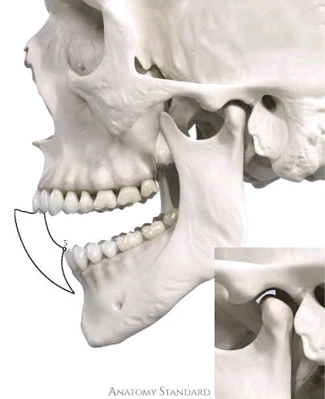
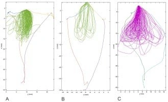

سه فضایی که موقعیت رستوریشن را تعیین میکنند: نوترال زون، انولوپ آو موشن و انولوپ آو فانکشن

هر رستوریشنی در فضایی قرار میگیرد که از قبل وجود داشته، و سه مفهوم این فضا را تعریف میکنند.
∆ نوترال زون (Neutral Zone)
دندانها در ناحیهای قرار دارند که از سمت داخل زبان و از سمت خارج لب و گونه به آن نیرو وارد میکنند. نوترال زون ناحیهای است که این دو نیرو در آن یکدیگر را خنثی میکنند. موقعیتش با لندمارک آناتومیک ثابت تعریف نمیشود، در هر فرد متفاوت است و با سن و تغییر تون عضلات هم جابهجا میشود. در منابع قدیمیتر با اسمهای دیگری هم آمده، مثل dead zone یا zone of equilibrium.
این مفهوم در منابع برای پروتز کامل تعریف شده، جایی که خارج شدن از این ناحیه مستقیما به ناپایداری پروتز، اختلال تکلم، ساپورت نامناسب بافت صورت و محدود شدن فضای زبان مربوط میشود. در کار ثابت پروتز جابهجا نمیشود، ولی اصل فیزیولوژیک همان است: کانتور باکال و لینگوال بخشی از دیوارهی فضایی است که زبان و گونه در آن کار میکنند.
∆ انولوپ آو موشن (Envelope of Motion)
فرض کن روی لبهی اینسایزال سانترال پایین یک نقطه گذاشتهای و از کنار به بیمار نگاه میکنی. حالا از بیمار میخواهی فک را در همهی جهتهای ممکن تا آخرین حد ببرد: دهان را کامل باز کند، از حالت بسته فک را تا انتها جلو بیاورد، تا انتها عقب ببرد، و در حالی که دندانها روی هم سر میخورند از موقعیت بسته به سمت جلو و پایین حرکت کند. مسیری که آن نقطه در فضا طی میکند یک محدودهی بسته میسازد. همان دیاگرام معروف Posselt.
مرزهای خلفی و تحتانی این محدوده را مفصل و لیگامان و عضلات تعیین میکنند، یعنی چیزهایی که ما نمیتوانیم تغییرشان بدهیم. اما مرز فوقانیاش را تماسهای دندانی میسازد، یعنی همان چیزی که با ترمیمهایمان میسازیم.
∆ انولوپ آو فانکشن (Envelope of Function)
همان نقطه را در نظر بگیر، ولی این بار بیمار کاری نمیکند جز اینکه غذا بجود، آب بخورد و حرف بزند. اینجا نقطه دیگر تا مرزهای آن محدوده نمیرود و یک مسیر کوچکتر و تکرارشونده را طی میکند، نزدیک به قسمت بالایی همان حجم. این مسیر عادی و روزمره، انولوپ آو فانکشن است.

این یکی به کانتور پالاتال قدامیهای بالا، طول لبهی اینسایزال، گاید قدامی (anterior guidance) و آناتومی اکلوزال مربوط میشود. اگر کار داخل این مسیر تجاوز کند، بیمار در هر بار جویدن عادی به آن برخورد میکند، و نتیجهاش بعدا به شکل ساییدگی، چیپینگ، دیباندینگ، لقی و گاهی ناراحتی عضلانی ظاهر میشود. حالت شدیدترش همان چیزی است که با عنوان constricted chewing pattern شناخته میشود.
∆ نکتهی عملی
هر بار طول کانین را بیشتر میکنیم، لبهی اینسایزال را بلندتر یا کوتاهتر میگیریم، یا شیب پالاتال قدامیها را عوض میکنیم، داریم انولوپ آو فانکشن بیمار را تغییر میدهیم. این کار گاهی لازم است، ولی باید آگاهانه انجام شود و بدانیم بیمار قرار است با چه مسیر جدیدی سازگار شود. مرحلهی پروویژنال و ساخت موقتی دقیقا برای همین است، که این تغییر قبل از کار نهایی تست شود.
∆ جمعبندی
نوترال زون روی موقعیت باکولینگوال اثر میگذارد و انولوپ آو فانکشن روی فرم سطح اکلوزال و گاید. هر دو فضاهایی هستند که عضلات و حرکت فک از قبل ساختهاند و رستوریشن قرار است داخلشان قرار بگیرد، نه اینکه آنها را بیتوجه بازتعریف کند.